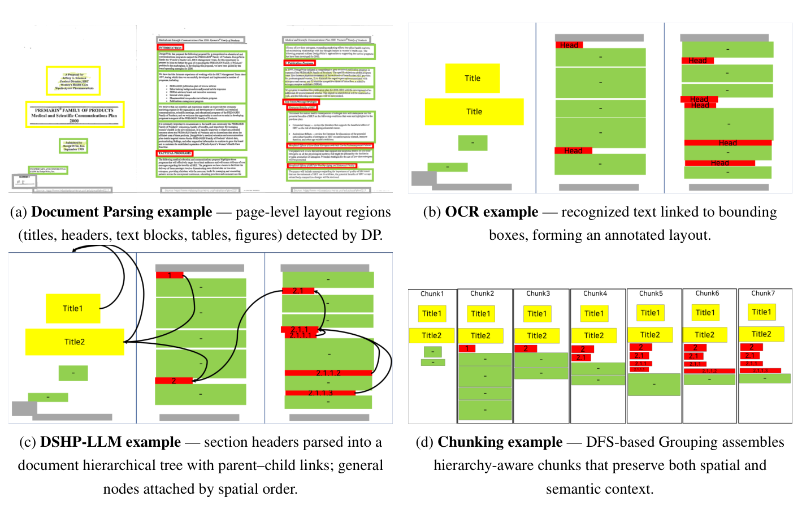

Publications / Top Conferences
MultiDocFusion: Hierarchical and Multimodal Chunking Pipeline for Enhanced RAG on Long Industrial Documents

Abstract
RAG-based QA has emerged as a powerful method for processing long industrial documents. However, conventional text chunking approaches often neglect the complex structures of long industrial documents, causing information loss and reduced answer quality. To address this, we introduce MultiDocFusion, a multimodal chunking pipeline that integrates: (i) detection of document regions using vision-based document parsing, (ii) text extraction from these regions via OCR, (iii) reconstruction of document structure into a hierarchical tree using large language model (LLM)-based document section hierarchical parsing (DSHP-LLM), and (iv) construction of hierarchical chunks through DFS-based Grouping. Extensive experiments across industrial benchmarks demonstrate that MultiDocFusion improves retrieval precision by 8–15% and ANLS QA scores by 2–3% compared to baselines, emphasizing the critical role of explicitly leveraging document hierarchy for multimodal document-based QA. These significant performance gains underscore the necessity of structure-aware chunking in enhancing the fidelity of RAG-based QA systems.
Key Contribution
A hierarchical multimodal chunking pipeline that preserves layout and improves evidence composition in industrial RAG.
Method
MultiDocFusion (Multimodal Document Structure Fusion) combines the visual layout and the hierarchical section structure of long industrial documents to build better retrieval units. It works on PDFs, scanned images, and documents with complex layouts, and supports corpus-level multi-document RAG. The pipeline has four stages:
- (a) Document parsing (DP). Vision models detect titles, section headers, text blocks, tables, and figures on each page and assign each segment a type and bounding box, producing a page-by-page layout structure.
- (b) OCR. Each segment is sent to an OCR engine, and the recognized text is linked back to its bounding box to form an annotated layout.
- (c) DSHP-LLM. An LLM instruction-tuned with LoRA on public document-hierarchy datasets reads the list of candidate section headers and assigns each header a parent (e.g.,
ID:3 Parent:2), forming a header tree. It then scans the spatially sorted list of all segments and attaches tables, figures, and text blocks to the current header, which yields a full document hierarchical tree. - (d) DFS-based grouping. A depth-first traversal of the tree aggregates each node's text with its descendants and splits a chunk when it exceeds a maximum length. Each chunk keeps its hierarchy as Markdown headers, so a subsection is retrieved together with its enclosing sections.

Results
Section-header hierarchy parsing on DocHieNet and HRDH. ↳ marks DSHP-LLM applied to the backbone above; bold marks an improvement over that backbone.
| Model | DocHieNet | HRDH | ||
|---|---|---|---|---|
| F1 | TEDS | F1 | TEDS | |
| GPT-4 | 0.5139 | 0.6961 | 0.2594 | 0.3342 |
| Llama-3.2-3B | 0.2558 | 0.5464 | 0.4389 | 0.4904 |
| ↳ DSHP-LLM | 0.4894 | 0.7549 | 0.8664 | 0.8459 |
| Qwen-2.5-3B | 0.4122 | 0.6995 | 0.3299 | 0.3734 |
| ↳ DSHP-LLM | 0.4808 | 0.6957 | 0.8856 | 0.8658 |
| Mistral-8B | 0.3907 | 0.6559 | 0.3445 | 0.3974 |
| ↳ DSHP-LLM | 0.6291 | 0.8230 | 0.9321 | 0.9199 |
| Qwen-2.5-7B | 0.5230 | 0.7356 | 0.2962 | 0.3807 |
| ↳ DSHP-LLM | 0.5565 | 0.8104 | 0.6330 | 0.6381 |
Retrieval by chunking method, averaged over top-k = 1 to 4. Bold marks the best score in each column.
| Chunking method | DUDE | MPVQA | CUAD | MOAMOB | ||||||||
|---|---|---|---|---|---|---|---|---|---|---|---|---|
| Recall | Precision | nDCG | Recall | Precision | nDCG | Recall | Precision | nDCG | Recall | Precision | nDCG | |
| Length chunking | 0.2628 | 0.1686 | 0.2166 | 0.2523 | 0.1587 | 0.1933 | 0.9011 | 0.8537 | 0.8776 | 0.6462 | 0.5676 | 0.6209 |
| Semantic chunking | 0.0956 | 0.0549 | 0.0775 | 0.0939 | 0.0524 | 0.0680 | 0.7684 | 0.6719 | 0.7181 | 0.2737 | 0.1950 | 0.2453 |
| LumberChunker | 0.2395 | 0.1533 | 0.1986 | 0.2152 | 0.1298 | 0.1609 | 0.9031 | 0.8576 | 0.8800 | 0.6130 | 0.5205 | 0.5692 |
| Perplexity chunking | 0.2428 | 0.1559 | 0.2020 | 0.2159 | 0.1318 | 0.1629 | 0.8869 | 0.8395 | 0.8603 | 0.6173 | 0.5241 | 0.5785 |
| Structure-based chunking | 0.2219 | 0.1450 | 0.1862 | 0.2036 | 0.1230 | 0.1524 | 0.8844 | 0.8311 | 0.8581 | 0.5544 | 0.4662 | 0.5149 |
| MultiDocFusion | 0.2927 | 0.2001 | 0.2505 | 0.2705 | 0.1759 | 0.2131 | 0.9021 | 0.8651 | 0.8819 | 0.6758 | 0.6184 | 0.6554 |
QA performance by chunking method, averaged over Llama-3.2-3B, Mistral-8B, and Qwen-2.5-7B readers. Bold marks the best score in each column.
| Chunking method | DUDE | MPVQA | CUAD | MOAMOB | ||||||||
|---|---|---|---|---|---|---|---|---|---|---|---|---|
| ANLS | ROUGE-L | METEOR | ANLS | ROUGE-L | METEOR | ANLS | ROUGE-L | METEOR | ANLS | ROUGE-L | METEOR | |
| Length chunking | 0.1611 | 0.1444 | 0.1988 | 0.1398 | 0.0966 | 0.1408 | 0.2585 | 0.1677 | 0.1662 | 0.2497 | 0.0823 | 0.1115 |
| Semantic chunking | 0.1548 | 0.1261 | 0.1657 | 0.1332 | 0.0805 | 0.0978 | 0.2593 | 0.1491 | 0.1468 | 0.2455 | 0.0846 | 0.1043 |
| LumberChunker | 0.1531 | 0.1284 | 0.1752 | 0.1307 | 0.0769 | 0.0993 | 0.2657 | 0.1630 | 0.1650 | 0.2536 | 0.0848 | 0.1167 |
| Perplexity chunking | 0.1653 | 0.1390 | 0.1855 | 0.1344 | 0.0751 | 0.0950 | 0.2641 | 0.1646 | 0.1524 | 0.2532 | 0.0894 | 0.1190 |
| Structure-based chunking | 0.1751 | 0.1489 | 0.1921 | 0.1537 | 0.0980 | 0.1278 | 0.2498 | 0.1556 | 0.1591 | 0.2501 | 0.0979 | 0.1114 |
| MultiDocFusion | 0.1859 | 0.1692 | 0.2285 | 0.1615 | 0.1316 | 0.1850 | 0.2738 | 0.1762 | 0.1650 | 0.2596 | 0.0916 | 0.1257 |
- MultiDocFusion improves retrieval precision by 8–15% and ANLS by 2–3% over the chunking baselines.
- Instruction tuning with DSHP-LLM raises HRDH F1 from 0.2962–0.4389 for the base backbones to 0.6330–0.9321.
BibTeX
@inproceedings{shin-etal-2025-multidocfusion,
title = "{M}ulti{D}oc{F}usion : Hierarchical and Multimodal Chunking Pipeline for Enhanced {RAG} on Long Industrial Documents",
author = "Shin, Joongmin and
Park, Chanjun and
Park, Jeongbae and
Seo, Jaehyung and
Lim, Heuiseok",
editor = "Christodoulopoulos, Christos and
Chakraborty, Tanmoy and
Rose, Carolyn and
Peng, Violet",
booktitle = "Proceedings of the 2025 Conference on Empirical Methods in Natural Language Processing",
month = nov,
year = "2025",
address = "Suzhou, China",
publisher = "Association for Computational Linguistics",
url = "https://aclanthology.org/2025.emnlp-main.1062/",
doi = "10.18653/v1/2025.emnlp-main.1062",
pages = "20985--21004",
ISBN = "979-8-89176-332-6"
}